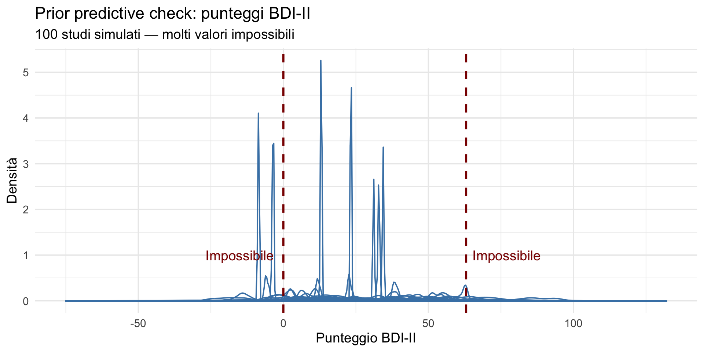
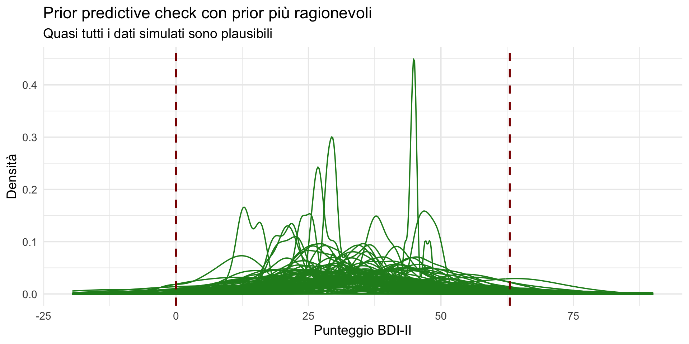
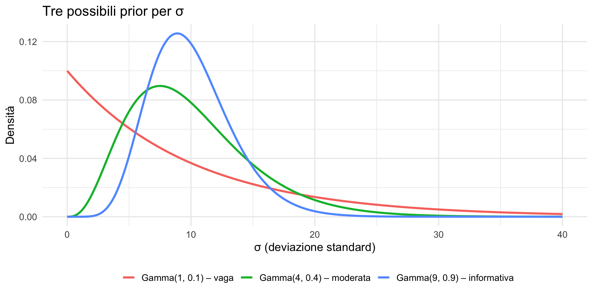
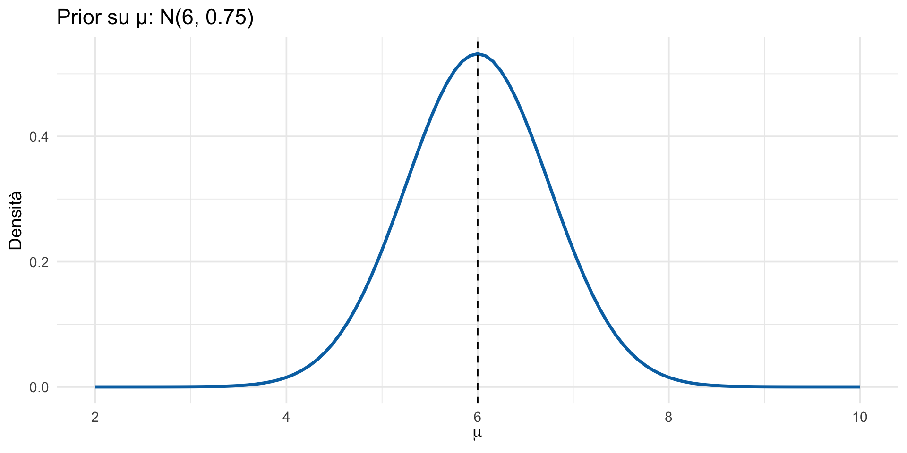
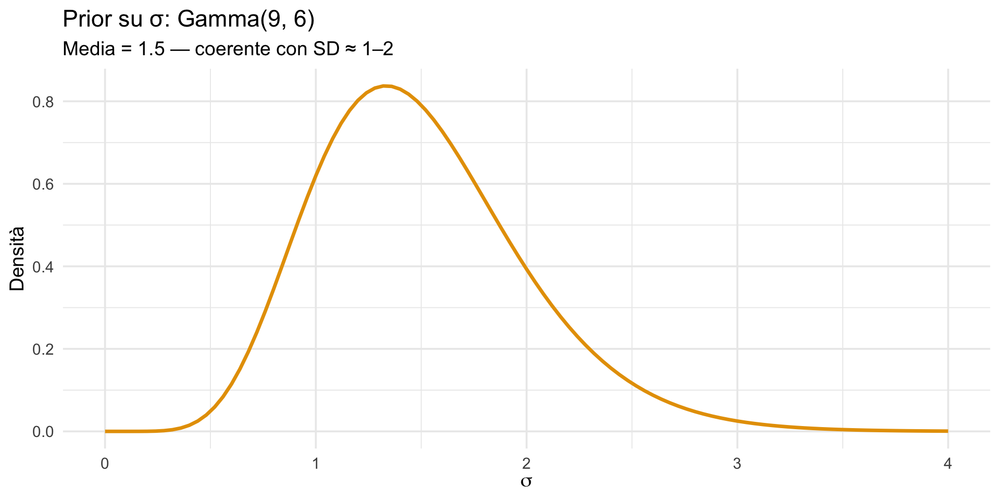
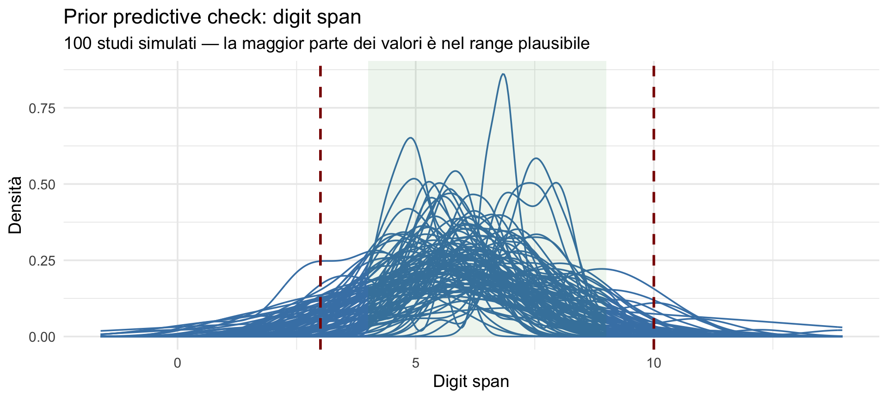

![]()
# Passo 1: Simuliamo UN SOLO studio
# 1. Scegliamo una prior per la media (mu)
mu_sim <- rnorm(n = 1, mean = 30, sd = 20)
# 2. Scegliamo una prior per la deviazione standard (sigma)
sigma_sim <- rexp(n = 1, rate = 0.1)
# 3. Generiamo i dati per 20 pazienti
n_pazienti <- 20
punteggi_simulati <- rnorm(
n = n_pazienti,
mean = mu_sim,
sd = sigma_sim
)Distribuzione predittiva a priori
Applicazioni e calibrazione — Segmento 2
15 febbraio 2026
Obiettivi
- Applicare il prior predictive check a variabili continue.
- Usare la simulazione per calibrare prior su scala dei dati.
- Sviluppare intuizioni pratiche per la scelta delle prior.
- Usare il prior predictive check come strumento di comunicazione con i colleghi.
Parte 1: variabili continue — punteggi BDI-II
Punteggi di depressione (BDI-II)
Vogliamo stimare il livello medio di depressione in pazienti con disturbo depressivo maggiore usando il BDI-II (Beck Depression Inventory II, range: 0–63).
Modello statistico:
- dato per il paziente \(i\): \(y_i \sim \text{Normale}(\mu, \sigma)\);
- prior su \(\mu\): da definire;
- prior su \(\sigma\): da definire.
Domanda pratica: come scegliere le prior in modo che il modello generi dati realistici?
Il problema: prior sui parametri vs. intuizioni sui dati
Noi specifichiamo le prior sui parametri (\(\mu\) e \(\sigma\)), ma ragioniamo naturalmente sui dati osservabili:
- i punteggi BDI-II devono stare tra 0 e 63;
- pazienti con depressione maggiore di solito hanno punteggi > 20;
- valori negativi o > 63 sono impossibili.
Le prior che scegliamo per \(\mu\) e \(\sigma\) portano a dati plausibili? Questo è il modello Normale-Normale che abbiamo studiato nella Lezione 19 — ora lo mettiamo alla prova.
Prior predictive check: l’idea
Vogliamo rispondere a questa domanda:
“Se il mio modello (con le prior scelte) fosse vero, che tipo di dati potrei osservare?”
Procediamo in due passi:
- simuliamo un solo studio con 20 pazienti;
- ripetiamo la simulazione molte volte per vedere la variabilità.
Passo 1: simuliamo un solo studio
Iniziamo in un modo semplice: immaginiamo di fare uno studio con 20 pazienti.
[1] 65.42709 57.82030 48.16588 61.93460 62.27959 51.91123Cosa abbiamo fatto?
- Abbiamo estratto una possibile media \(\mu\) dalla sua prior.
- Abbiamo estratto una possibile deviazione standard \(\sigma\) dalla sua prior.
- Abbiamo generato 20 punteggi da una Normale con quei parametri.
E se ripetiamo? Un secondo studio
Rifacciamo lo stesso procedimento:
[1] 77.11850 66.80188 67.57019 60.89005 70.75242 65.87242Ogni volta otterremo punteggi diversi perché i parametri \(\mu\) e \(\sigma\) cambiano.
Passo 2: simuliamo molti studi
Vogliamo vedere l’intera gamma di dati che il modello considera plausibili.
- Simuliamo 5000 studi, ognuno con 20 pazienti.
Per gestire tanti studi, usiamo una lista: ogni elemento della lista è uno studio.
Simulazione di 5000 studi
Cosa contiene dati_sim?
dati_simè una lista di 5000 elementi.
- Ogni elemento è un vettore di 20 numeri (i punteggi di uno studio).
dati_sim[[1]]= punteggi del primo studio simulato.
dati_sim[[2]]= punteggi del secondo studio simulato.
- … e così via
Visualizziamo 100 studi a caso

Quantifichiamo il problema
Calcoliamo quanti valori simulati sono impossibili (<0 o >63).
Valori < 0: 10.3 %Valori > 63: 7.7 %Totale valori impossibili: 18 %Risultato:
con queste prior, una quota rilevante dei dati simulati è impossibile.
Conclusione
Le prior “vaghe” che abbiamo scelto:
- \(\mu \sim \text{Normale}(30, 20)\),
- \(\sigma \sim \text{Esponenziale}(0.1)\),
producono dati irrealistici per il BDI-II.
Prior che sembrano poco informative sui parametri possono essere molto informative (e sbagliate) sui dati.
Prossimo passo:
dobbiamo scegliere prior che rispettino i vincoli del problema reale (punteggi tra 0 e 63).
Rendiamo le prior più ragionevoli
Ragioniamo direttamente sulla scala dei dati:
- per pazienti depressi, \(\mu\) è plausibilmente tra 20 e 45 — usiamo una Normale(32, 8);
- la variabilità tipica è tra 5 e 15 — usiamo una Gamma centrata su 10.
# Prior più informative
mu_sim_good <- rnorm(n_sim, mean = 32, sd = 8)
# Gamma per sigma: media 10
sigma_sim_good <- rgamma(n_sim, shape = 4, rate = 0.4)
# Simuliamo di nuovo
dati_sim_good <- vector("list", n_sim)
for (i in 1:n_sim) {
dati_sim_good[[i]] <- rnorm(
n_pazienti,
mean = mu_sim_good[i],
sd = sigma_sim_good[i]
)
}Confronto quantitativo
Con prior più ragionevoli:Valori < 0: 1.39 %Valori > 63: 1.52 %Ora i valori impossibili sono rari.
Visualizzazione del miglioramento

Messaggio finale
Le prior non vanno giudicate solo sulla scala dei parametri, ma sulla scala dei dati che generano.
Il prior predictive check è uno strumento fondamentale per:
- individuare assunzioni implausibili;
- migliorare il modello prima di vedere i dati;
- collegare statistica e conoscenza clinica.
Parte 2: calibrazione iterativa
Il processo di calibrazione delle prior
La scelta delle prior non è un atto unico, ma un processo iterativo:
- proponi una prior iniziale;
- simula dati dalla distribuzione predittiva a priori;
- valuta: i dati simulati sono clinicamente plausibili?
- modifica la prior se necessario;
- ripeti fino a ottenere risultati sensati.
Non esiste la prior “perfetta”, ma possiamo scartare quelle chiaramente implausibili e avvicinarci a una coerente con la conoscenza clinica.
Esempio: calibrare la prior su σ
Vogliamo rispondere a una domanda concreta:
Quale prior sulla deviazione standard σ è ragionevole per i punteggi BDI-II in un campione clinico?
Consideriamo tre possibilità, da molto vaga a più informativa.

Come traduciamo queste prior in dati simulati
Per ogni studio simulato facciamo sempre le stesse cose:
- estraiamo una media \(\mu\) (qui fissiamo una prior ragionevole);
- estraiamo una deviazione standard \(\sigma\) dalla prior che vogliamo testare;
- generiamo 20 punteggi BDI-II da una Normale \(N(\mu, \sigma^2)\).
Ripetendo il processo molte volte, osserviamo che tipo di dati produce quella prior.
Una funzione che rappresenta uno studio simulato
simula_bdi <- function(sigma_prior_fn,
n_sim = 1000,
n_pazienti = 20) {
# 1. Estraiamo le medie per ciascuno studio
mu_sim <- rnorm(n_sim, mean = 32, sd = 8)
# 2. Estraiamo le sigma dalla prior scelta
sigma_sim <- sigma_prior_fn(n_sim)
# 3. Generiamo i dati per ciascuno studio
dati <- sapply(1:n_sim, function(i) {
rnorm(n_pazienti,
mean = mu_sim[i],
sd = sigma_sim[i])
})
# 4. Restituiamo tutti i valori come un unico vettore
as.vector(dati)
}Cosa fa sapply()
Questa riga:
va letta così:
“Per ogni studio \(i = 1, \dots, n_{\text{sim}}\): genera 20 osservazioni da una Normale con media \(\mu_i\) e deviazione standard \(\sigma_i\).”
sapply() è un modo compatto per dire:
È solo un loop scritto in modo più breve.
Simulazione comparativa delle tre prior
Ora applichiamo la stessa procedura a tre prior diverse su σ:
Ogni vettore contiene tutti i punteggi simulati prodotti da migliaia di studi ipotetici.
Risultati della calibrazione
Valori fuori range (< 0 o > 63):Prior vaga: 5.5 %Prior moderata: 3.2 %Prior informativa: 2.3 %Interpretazione finale
- La prior vaga su σ produce dati estremamente dispersi e una percentuale non trascurabile di valori impossibili.
- La prior moderata riflette meglio la variabilità clinica tipica.
- La prior informativa genera dati più concentrati e quasi sempre plausibili.
Il prior predictive check ci permette di scegliere consapevolmente tra queste opzioni, prima di vedere i dati reali.
Take-home message
Le prior vanno giudicate non solo sulla scala dei parametri, ma soprattutto sulla scala dei dati che generano.
E sapply() è solo uno strumento per ripetere molte volte un’idea concettualmente semplice.
Parte 3: comunicare con i colleghi
Il prior predictive check come strumento di comunicazione
Il prior predictive check è eccellente per discutere le assunzioni con collaboratori non statistici.
Invece di dire:
“ho usato una prior Beta(8, 6) sul parametro θ,”
possiamo dire:
“prima di vedere i dati, mi aspetto che tra il 40% e il 70% dei pazienti risponda al trattamento.”
Esempio: discussione con un clinico
Statistico: “Prima di analizzare i dati, vediamo se le mie assunzioni hanno senso. Con il mio modello, mi aspetto che i punteggi BDI siano distribuiti così…”
Clinico: “Hmm, questi valori sembrano troppo alti. I miei pazienti raramente superano 50.”
Statistico: “Ok, modifico la prior sulla media. Ora i dati simulati sono più realistici?”
Clinico: “Sì, molto meglio. Questo corrisponde a quello che vedo nella pratica.”
Questo dialogo iterativo è esattamente il processo di calibrazione che abbiamo appena visto — tradotto in un linguaggio accessibile.
Documentare le scelte
Un buon report include:
- specificazione delle prior con giustificazione;
- grafici del prior predictive check;
- discussione di eventuali valori implausibili;
- iterazioni se le prior sono state modificate.
Questo rende l’analisi trasparente e riproducibile — due valori centrali dell’Open Science che abbiamo discusso sin dalla Lezione 16.
Parte 4: esercizio guidato
Scenario: memoria di lavoro e invecchiamento
Un ricercatore vuole studiare la memoria di lavoro (digit span) in anziani sani.
Conoscenza del dominio
- il digit span tipicamente varia tra 4 e 9;
- negli anziani sani la media è circa 6;
- la variabilità è moderata (SD ≈ 1–2).
Obiettivo: scegliere prior ragionevoli per \(\mu\) e \(\sigma\) e verificarle con un prior predictive check.
Modello statistico
Assumiamo un modello continuo semplice:
\[ y \sim \mathcal{N}(\mu,\sigma^2), \] dove:
- \(\mu\) = media del digit span nella popolazione di anziani sani;
- \(\sigma\) = variabilità individuale.
Prior su μ
Assumiamo che la media sia intorno a 6, con incertezza moderata:
\[ \mu \sim \mathcal{N}(6,\; 0.75). \]
La prior concentra la massa attorno a 6, ma permette valori plausibili tra circa 4.5 e 7.5.

Prior su σ
Assumiamo che la deviazione standard sia tipicamente tra 1 e 2, con flessibilità limitata verso valori più grandi:
\[ \sigma \sim \text{Gamma}(9,\; 6), \]
(media = 1.5).
La prior assegna maggiore plausibilità a valori tra 0.7 e 2.6, coerenti con la variabilità tipica del digit span.

Controlliamo cosa implicano le prior (senza simulare dati)
Prior su μ: N(6, 0.75):
Intervallo 95%: 4.5 - 7.5 Interpretazione:
- \(\mu\) è quasi sempre tra ~4.5 e ~7.5 — plausibile.
Prior su σ: Gamma(9, 6):
Media: 1.5 Intervallo 95%: 0.69 - 2.63 Interpretazione:
- \(\sigma\) è quasi sempre tra ~0.7 e ~2.6 — ben compatibile con SD ≈ 1–2.
Idee da tenere a mente prima del codice
Stiamo facendo un prior predictive check, cioè:
Prima scegliamo valori possibili per i parametri del modello
- una possibile media della popolazione: \(\mu\),
- una possibile variabilità: \(\sigma\).
Poi generiamo dati finti (simulati) \(y\) usando quei parametri.
Ripetiamo tante volte: ogni ripetizione è uno “studio possibile”.
Se le prior sono ragionevoli, i dati simulati dovrebbero assomigliare a valori realistici di digit span (in genere tra 4 e 9, raramente fuori).
Procediamo con la simulazione
1) Le prior (parte concettuale)
Prior su \(\mu\):
\[ \mu \sim \mathcal{N}(6,\; 0.75). \] Vuol dire: “prima di vedere dati, crediamo che la media sia attorno a 6 e spesso tra circa 4.5 e 7.5”.
Prior su \(\sigma\):
\[ \sigma \sim \text{Gamma}(9,\; 6). \] Vuol dire: “prima di vedere dati, crediamo che la SD sia spesso tra 1 e 2, raramente sopra 2.5”.
Nota: qui
Gamma(shape=9, rate=6)ha mediashape/rate = 1.5.
2) Le funzioni prior_mu() e prior_sigma()
Cosa significa “function(n) …”?
- Stiamo creando una macchina (funzione) che, quando le dai un numero
n, producenvalori casuali.
Le funzioni rnorm(...) e rgamma(...) in parole semplici:
rnorm(n, mean, sd)= genera n numeri da una normale con quella media e SD.rgamma(n, shape, rate)= genera n numeri da una gamma con quei parametri.
Quindi:
prior_mu(1)produce un solo valore possibile di \(\mu\);prior_mu(5000)produce 5000 possibili valori di \(\mu\).
3) Simuliamo UNO studio (25 soggetti)
set.seed(1)blocca il “seme” della casualità: serve per ottenere gli stessi numeri se rifai girare il codice (utile per esercizi e report).n_soggetti <- 25salviamo in una variabile il numero di osservazioni che vogliamo simulare.mu_1 <- prior_mu(1)estraiamo un valore plausibile per \(\mu\). È come dire: “in questo mondo possibile, la vera media è questa”.sigma_1 <- prior_sigma(1)estraiamo un valore plausibile per \(\sigma\).digit_1 <- rnorm(n_soggetti, mean = mu_1, sd = sigma_1)ora creiamo 25 dati finti: un valore per ogni soggetto. Tutti vengono dalla stessa normale, usando i parametri appena estratti.
Stampiamo cosa è successo
Studio 1: mu = 5.53 | sigma = 1.51 [1] 4.270611 7.934737 6.026829 4.293462 6.264865 6.643041 6.398039 5.069846
[9] 7.808877 6.117773 4.593760 2.191928 7.225775 5.462431 5.505756 6.952810
[17] 6.767992 6.425351 6.915340 6.709079 5.642552 2.531597 6.464427 5.445556
[25] 5.295328Interpretazione: questo è “uno studio possibile” coerente con le prior.
4) Simuliamo un SECONDO studio
[1] 4.615537 4.248807 4.379627 4.121562 5.764570 6.272150 6.081430 4.384160
[9] 6.375290 4.563437 6.995615 5.566384 4.356378 3.903598 3.504221 3.624777
[17] 3.030009 6.277672 5.890278 4.625539 5.214665 4.447208 7.811568 3.947417
[25] 4.831420Qui succede la stessa cosa, ma in un nuovo “mondo”:
- cambiano prima i parametri (\(\mu_2, \sigma_2\)),
- poi cambiano i dati.
Idea chiave: la variabilità tra studi nasce perché anche i parametri cambiano (non solo i dati).
5) Prior predictive: simuliamo MOLTI studi (5000)
Qui facciamo lo stesso, ma ripetuto 5000 volte.
Cosa sono mu_sim e sigma_sim?
Sono due vettori:
mu_simcontiene 5000 valori: la media “vera” di ciascuno studio simulato;sigma_simcontiene 5000 valori: la SD “vera” di ciascuno studio simulato.
Esempio:
mu_sim[1]= la \(\mu\) del primo studio;sigma_sim[1]= la \(\sigma\) del primo studio.
Creiamo un contenitore per salvare i dati di ogni studio
Cos’è una lista?
Una lista in R è un contenitore flessibile che può ospitare oggetti di tipo diverso (vettori, dataframe, persino altre liste).
In questo caso, la useremo per memorizzare separatamente i 25 dati generati da ciascuno studio:
dati_digit[[1]]conterrà i 25 dati del primo studio;dati_digit[[2]]quelli del secondo;- …
dati_digit[[5000]]quelli del cinquemillesimo.
Attenzione alla notazione: la doppia parentesi
In R, la differenza è sottile ma fondamentale:
- Le singole parentesi
[ ]si usano per estrarre sottoinsiemi da vettori, matrici o dataframe (mantenendo la classe dell’oggetto originale). - Le doppie parentesi
[[ ]]si usano per estrarre l’elemento vero e proprio da una lista, come se si aprisse un cassetto per prendere ciò che contiene.
Pensate a una lista come a uno scaffale con cassetti:
dati_digit[1]vi restituisce il primo cassetto (ancora chiuso),dati_digit[[1]]vi restituisce il contenuto del primo cassetto — in questo caso, il vettore con i 25 dati.
Riempire la lista con un loop for
for (i in 1:n_sim)significa: “ripeti per i = 1,2,3,…,5000”.
Dentro:
- generi 25 dati con
rnorm(...); - usando la media e SD dello studio i-esimo;
- e li salvi in
dati_digit[[i]].
Quindi ogni “cassetto” della lista contiene uno studio.
Uniamo tutti i valori (per le statistiche globali)
Cosa fa unlist()?
Prende la lista di 5000 studi (ognuno con 25 numeri) e la “schiaccia” in un unico vettore lungo:
- 5000 × 25 = 125000 valori totali.
È utile per calcolare la media complessiva, la SD complessiva e le percentuali fuori range.
6) Controlli rapidi di plausibilità
Media: 6 SD: 1.74 Range: -9.3 - 17.4 Poi controlliamo quanti valori sono “chiaramente strani”:
Valori fuori dal range plausibile (< 3 o > 10):5.6 %Obiettivo: pochi valori sotto 3 o sopra 10.
7) Visualizzazione: 100 studi sovrapposti
set.seed(123)
idx <- sample(1:n_sim, 100)
df_digit_lines <- data.frame(
valore = unlist(dati_digit[idx]),
studio = rep(1:100, each = n_soggetti)
)
ggplot(df_digit_lines, aes(x = valore, group = studio)) +
geom_density(alpha = 0.1, color = "steelblue") +
geom_vline(xintercept = c(3, 10), color = "darkred",
linewidth = 1, linetype = "dashed") +
annotate("rect", xmin = 4, xmax = 9, ymin = 0, ymax = Inf,
fill = "forestgreen", alpha = 0.08) +
labs(title = "Prior predictive check: digit span",
subtitle = "100 studi simulati — la maggior parte dei valori è nel range plausibile",
x = "Digit span", y = "Densità") +
theme_minimal(base_size = 14)
Questa parte serve a generare un grafico per confermare che le distribuzioni simulate stanno in un range realistico.
Punti chiave:
scegliamo 100 studi casuali con
sample();costruiamo un data frame con:
- colonna
valore= digit span; - colonna
studio= etichetta dello studio.
- colonna
geom_density()disegna la densità per ogni studio (sovrapposta).
Mini-riassunto
Prior = credenze ragionevoli prima dei dati
Prior predictive = generare dati prima dei dati reali per vedere se le prior “producono mondi sensati”
Oggetti:
- funzioni (
prior_mu) = generatori di valori - vettori (
mu_sim) = tante \(\mu\) (una per studio) - lista (
dati_digit) = tanti studi separati - unlist (
tutti_digit) = tutti i dati insieme per fare calcoli veloci
- funzioni (
Valutazione finale
Le prior sembrano ragionevoli perché:
- la distribuzione è centrata intorno a 6;
- la maggior parte dei valori cade nel range tipico 4–9;
- i valori chiaramente implausibili (< 3 o > 10) sono rari.
Conclusione: il modello è coerente con la conoscenza del dominio e pronto per i dati reali.
Take-home message
La calibrazione delle prior passa attraverso i dati che generano.
Con il prior predictive check possiamo verificare prima dell’analisi se il modello produce risultati credibili.
Riepilogo e percorso del corso
Il percorso fin qui
Lezioni 5–11 — Probabilità, distribuzioni, verosimiglianza.
Lezioni 14–16 — Inferenza frequentista, IC, p-value, crisi di replicabilità.
Lezione 17 — I tre ingredienti bayesiani. Approssimazione a griglia.
Lezione 18 — Apprendimento sequenziale.
Lezione 19 — Famiglie coniugate: Beta-Binomiale e Normale-Normale.
Lezione 20 — Sintesi del posterior: stime puntuali, ETI, HDI, domande probabilistiche.
Lezione 22 (oggi) — Distribuzione predittiva a priori e prior predictive check.
Nella prossima lezione studieremo la distribuzione predittiva a posteriori: cosa succede quando ripetiamo lo stesso ragionamento dopo aver visto i dati? Passeremo dalle previsioni “al buio” alle previsioni informate dall’evidenza.
I punti chiave
La distribuzione predittiva a priori mostra quali dati ci aspettiamo prima di osservarli.
Il prior predictive check verifica se le prior producono dati plausibili.
È più facile ragionare sulla scala dei dati che sulla scala dei parametri.
La calibrazione delle prior è un processo iterativo.
Confrontare prior diverse sulla scala dei dati è una forma di analisi di sensibilità — argomento approfondito nel materiale didattico.
Il messaggio fondamentale
“Se il mio modello non produce dati sensati prima di vedere i dati reali, come posso fidarmi delle sue conclusioni dopo?”
Il prior predictive check è uno strumento di onestà scientifica: ci costringe a rendere esplicite e verificabili le nostre assunzioni.
Per la prossima lezione
Materiale di studio: https://ccaudek.github.io/utet-companion/
Prossimo argomento:
“La distribuzione predittiva a posteriori: fare previsioni dopo aver osservato i dati.”
Oggi abbiamo visto cosa il modello si aspetta prima dei dati. Domani vedremo cosa il modello prevede dopo — e come le previsioni si restringono grazie all’evidenza.